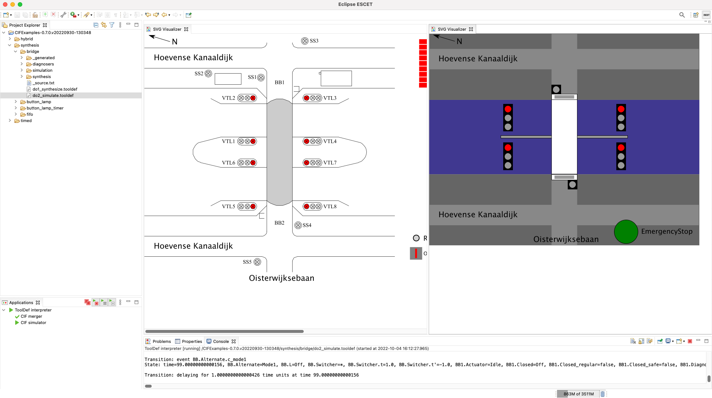
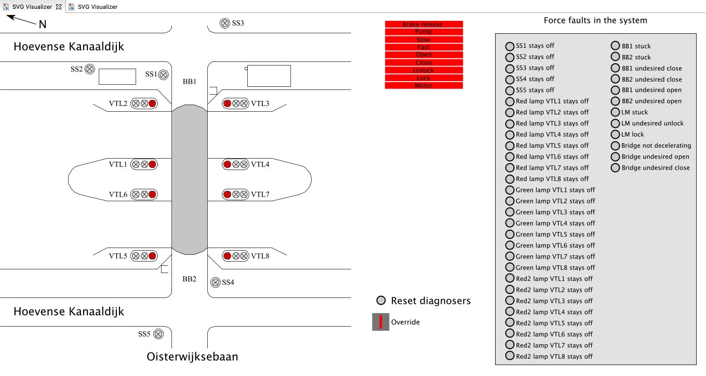

CIF example: bridge model
Introduction
This bridge model is a CIF example that models the Oisterwijksebaan bridge, a movable bridge located in Tilburg, the Netherlands.
This model is originally described in a scientific publication.
Below several simulation scenarios are described that make use of this CIF example model.
Simulation scenario 1: nominal behavior
In this first demonstration scenario, we will synthesize a supervisor from the provided models and then simulate the nominal behavior of the bridge using interactive visualization.
Scripts written in the ToolDef scripting language are provided to automate this, combining and automating several CIF tools.
To synthesize a supervisor, select the do1_synthesize.tooldef file in the Project Explorer tab with a single left-mouse click and then press F10 on your keyboard.
Alternatively, one can right-click the same file and select Execute ToolDef.
You will see that output is being printed to the Console tab while the synthesis tool is running.
Synthesis will take only a couple of seconds, and the final message on the console is Supervisor synthesized, indicating that synthesis has completed.
Now we can start the simulation of the synthesized supervisor by executing do2_simulate.tooldef, again by selecting this file and pressing F10.
After approximately 10 seconds, two new tabs will appear in the Eclipse ESCET IDE.
If your monitor has a high enough resolution, one can drag the tabs to be displayed next to each other, as follows:

In the middle of the figure a schematic drawing of the movable bridge is shown that visualizes what is actually happening in the system.
At the right of the figure the interactive graphical user interface (GUI) is shown, which we will use later to send commands to the controller.
This GUI closely resembles the real-life GUI of this bridge.
Finally, the Console tab, shown at the bottom of the figure, records a history of the simulation.
If the simulation needs to be stopped at any point in time, one can always terminate it by clicking the red termination square at the top-right corner of the Console tab.
Subsequently, all visualizer tabs opened by the simulator can be closed to prepare for a next simulation, by clicking the cross at the right side of each of the tab's headers.
Alternatively, the simulation may also be stopped by closing all visualizer tabs.
By following the steps below, the nominal behavior of the bridge is showcased.
For the sake of convenience, the movements in the simulation are faster than in real life.
Stopping land traffic
-
A bridge opening is started by activating traffic lights to stop land traffic.
Therefore, click on the white bridge deck in the GUI (the white rectangle in the middle).
-
In the pop-up window in the GUI called Barriers, click the button Close LT (where LT is an abbreviation of land traffic).
-
This activates the stop signs SS1-SS5, see the visualization of the system.
-
After several seconds, the button Close Barriers is made available to the operator.
In case you missed it, click Open LT, followed by Close LT again, and observe that Close Barriers becomes black after approximately 5 seconds.
-
Now, click Close Barriers to close the traffic barriers.
Observe how the barriers are closing and the barrier lights are blinking in the system visualization.
The GUI shows closed barriers by the two white rectangles on both sides of the bridge deck.
-
Now the land traffic is safely stopped, so the Barriers pop-up window in the GUI can be closed by clicking the cross at the top-right of the pop-up window.
Opening the bridge
-
We are now ready to open the bridge itself.
For this, click again on the white bridge deck in the GUI.
-
A different pop-up window in the GUI opens, called Bridge.
Click Open Bridge.
-
The bridge is now being opened.
By design, the GUI only shows three discrete states of the bridge deck: closed, in-between, and open.
The visualization of the actual system shows the continuous movement of the bridge deck.
Changing the vessel traffic lights
-
The traffic lights for the vessels can now be changed to let them pass the bridge.
-
Choose any of the four 'regularly looking' traffic lights on the waterway (the blue rectangle) and click on its middle circle (the one directly under the red circle).
This makes that traffic light switch to a red-green aspect, which indicates that vessels can soon start to pass the bridge from that side (left side or right side) at that point (upper lane or lower lane).
-
Clicking the same circle again will activate the green aspect, which indicates that vessels can pass the bridge from that side at that point.
-
Now, click on the second circle of the traffic light in the opposite direction (for example, if you turned the top-right traffic light to green, click now on the top-left traffic light).
Observe that that traffic light will go to a red-green aspect.
-
Try to click the same circle again as in the previous step.
The synthesized supervisor will block that traffic light from going to a green aspect, as there is a requirement in the model that states that a traffic light cannot go to green if the traffic light at the opposite side is already green.
-
At the first traffic light that is green, click on the top circle.
This will change that traffic light back to the red aspect.
-
Switching back to the traffic light on the opposite side, click the green circle in the middle, to switch it from a red-green aspect to a green aspect, which is now allowed by the supervisor.
-
Clicking on the top circle of that traffic light brings it back to showing a red aspect.
Closing the bridge
-
If all vessel traffic lights are showing a red aspect, the bridge can be closed again.
Observe that in that state the button Close Bridge is available.
In case you closed the pop-up window with the buttons, you can click again on the white bridge deck in the GUI.
Click on the Close Bridge button to close the bridge.
-
The bridge will be closing.
If desired, the Stop button can be clicked to stop the bridge movement.
-
Once stopped, the closing of the bridge can be continued by clicking Close Bridge again.
Closing the bridge
-
Finally, the land traffic can be released.
For this, click Open LT to initiate the process.
-
A fully automated sequence is started.
First, the boom barriers are opened.
Once open, the land traffic stop signs are turned off.
-
Now the land traffic can freely pass the bridge, so the Bridge pop-up window in the GUI can be closed by clicking the cross at the top-right of the pop-up window.
Terminating the simulation
-
The simulation can now be stopped by closing the two visualizer tabs (for the system visualization and the GUI) that the simulator opened, by clicking the cross at the right side of each of the tab's headers.
Simulation scenario 2: fault-tolerant behavior
In this second demonstration scenario, we will simulate faults in the system and observe the behavior of the system with a fault-tolerant supervisor.
We assume that the supervisor has already been synthesized.
If not, see the first scenario above for how to synthesize it.
The simulation of the fault-tolerant supervisor can be started by again executing do2_simulate.tooldef, by selecting this file and pressing F10.
The same two visualization tabs as for the first scenario appear.
Enlarging the system visualization tab, or scrolling to show the right side of the visualization, will reveal a gray panel with numerous faults to inject into the system.
For monitors with lower resolutions, rather than putting the two visualizations side by side, it may be better to stack the tabs:

Observe how both tab headers are shown above a single visible visualization, similar to how browser tabs work.
It is then possible to click on the other tab's header to show that visualization, allowing to switch between the two visualizer tabs.
The scenario below will inject the fault that the top barrier BB1 is stuck and will not close.
Closing the bridge
-
In the system visualization, locate the fault BB1 stuck (top of the second column) and click the circle in front of it.
This injects the fault into the system.
-
Stop the land traffic by following the steps under Stopping land traffic of the nominal scenario.
-
Observe that the top barrier is not closing in the system visualization.
-
After a couple of seconds, the supervisor notices the fault and indicates that a faulty barrier has been detected by coloring it red in the GUI.
-
The operator confirms the error by clicking the Stop button in the GUI.
-
Any fault can be resolved by first clicking the orange circle in front of the injected fault, and then by clicking the circle in front of Reset diagnosers to reset the fault diagnosers of the supervisor.
-
Now we can try to close the barrier again.
For this, click Close Barriers.
-
Observe that the top barrier is now closing as in normal circumstances.
-
The simulation might now be continued as under nominal behavior.
If desired, one can also at any time inject any of the other faults into the system, and observe how the system controlled by the fault-tolerant supervisor then behaves.
Legal
Copyright © 2022, 2023 Contributors to the Eclipse Foundation
See the NOTICE file(s) distributed with this work for additional information regarding copyright ownership.
This program and the accompanying materials are made available under the terms of the MIT License.
SPDX-License-Identifier: MIT